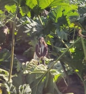
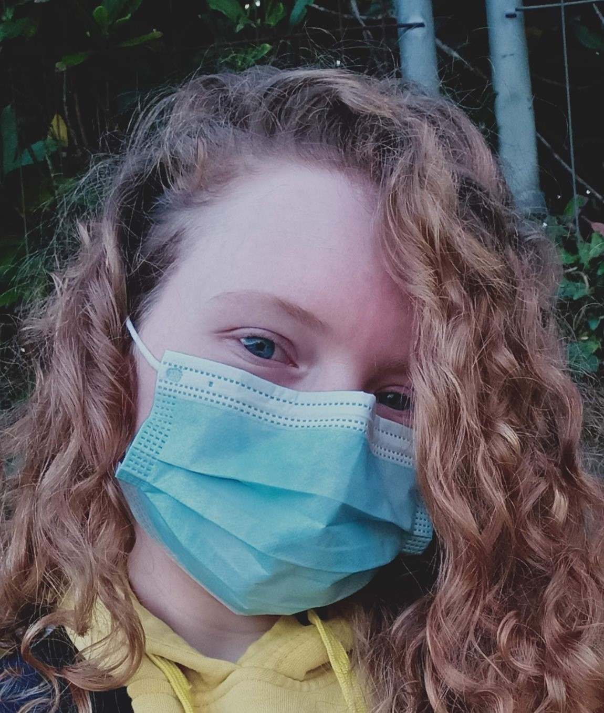
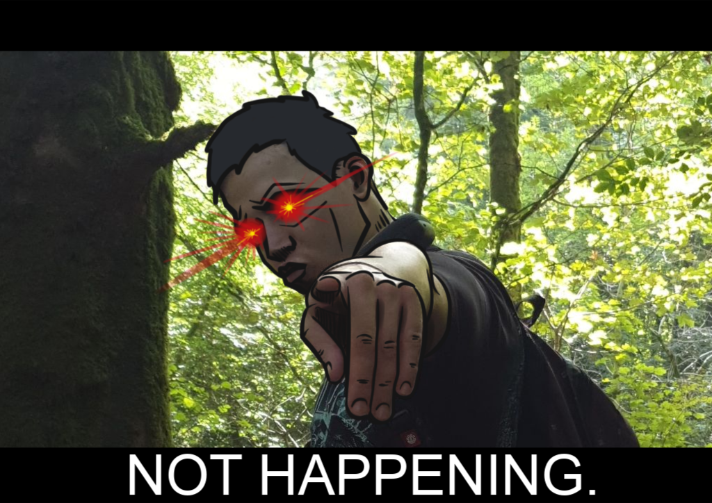
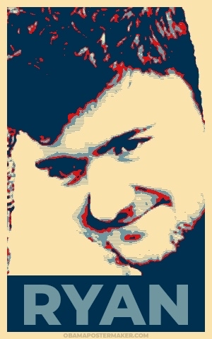

Abbie Thompson
(she/her)
Abbie is one of our 6 artists for the team, studying Game Development: Art at Falmouth University.
Cassy Cornish
(she/her)

Cassy is one of our generalist Game Designers, studying Game Development: Design at Falmouth Univeristy.
She is a loving mother to 3 cats.
Hayley Davies
(she/they)

Hayley is one of our few programmers, studying Game Development: Programming at Falmouth Univeristy.
She is primarily focused on Gameplay and Tools programming within the team and is a wizard with git, aiding in the overall team usage of git and git flow to effectively manage our projects.
They are also our social media manager, marketing our team on Twitter and developing this site from scratch.
Hayley streams occasionally, mainly playing games but also making them too.
Iwan Jones
(he/him)
Iwan is our sole animator for the team, studying Game Development: Animation at Falmouth University.
He is primarily a gameplay animator however dabbles in character animation and rigging on the side.
Jay Dixon
(they/them)

Jay is one of our 6 artists for the team, studying Game Art at Falmouth University.
Josh Thompson
(he/they)

Josh is one of the few programmers in our team.
He loves being faced with programming challenges and will code until 4am if not told otherwise.
He has previosuly released his own indie game titled "Cowboys n' Stuff" on Steam!
Matt Roberts
(he/they)

Matt is one of our 3 programmers for the team, studying Game Development: Programming at Falmouth University.
Naomi Lakin
(she/her)

Naomi is one of our 6 artists for the team, studying Game Art at Falmouth University.
Nyah Payne
(she/her)

Nyah is our sole Writer for the team, studying Game Development: Writing at Falmouth University.
Oliver Britland
(he/him)

Oliver is one of our 6 artists for the team, studying Game Development: Art at Falmouth University.
Oliver Gisborne
(he/him)
Oliver is one of our 6 artists for the team, studying Game Art at Falmouth University.
Otis Hull
(he/him)
Otis is our sole audio designer for the team, studying Game Development: Audio at Falmouth University.
Ryan Minty
(he/him)
Ryan.
Sophie James
(she/her)

Sophie is one of our 6 artists for the team, studying Game Art at Falmouth University.